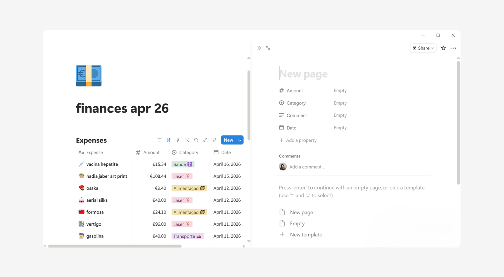
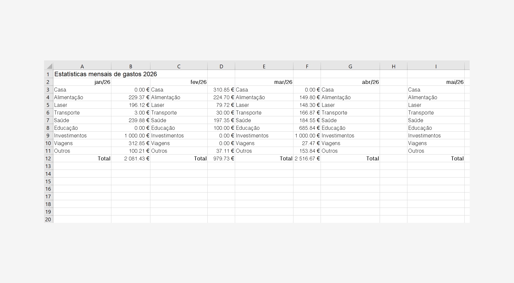
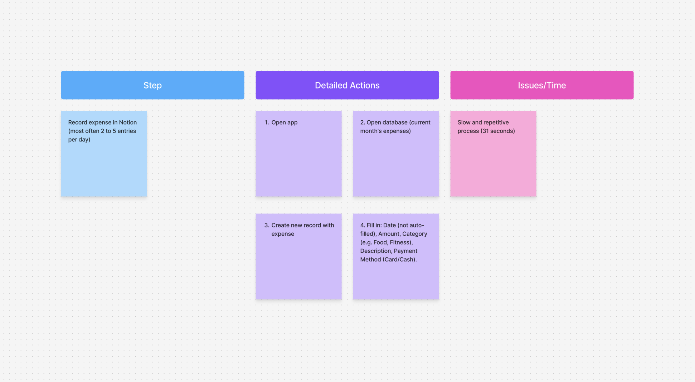
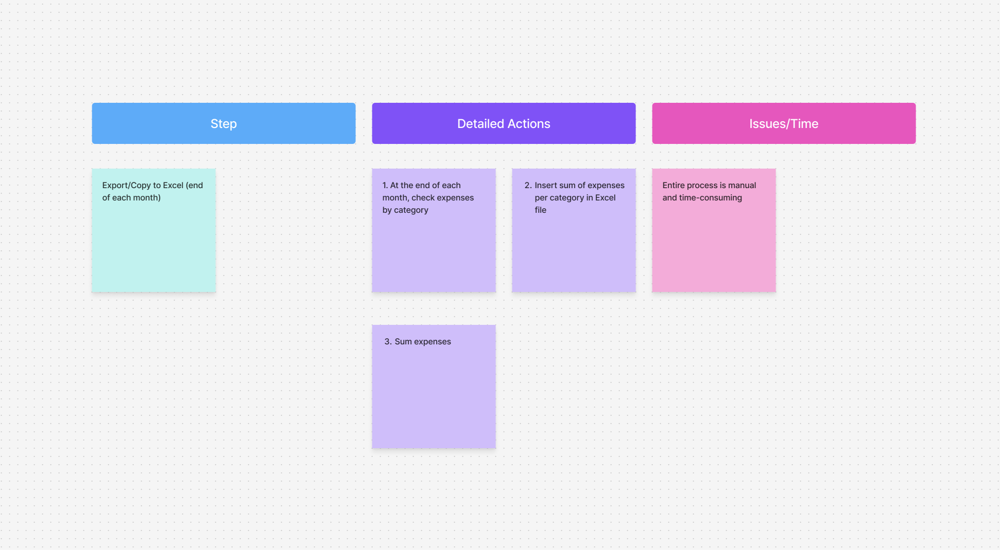
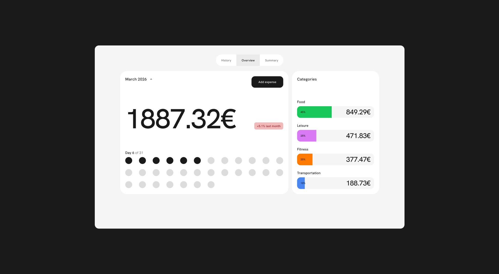
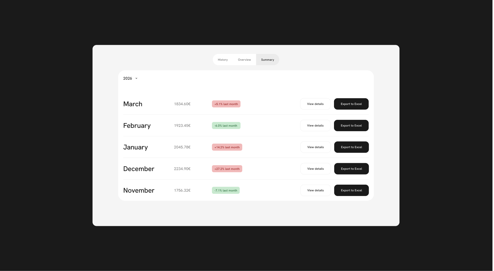

PERSONAL
FINANCE TRACKER
What if you could get monthly expense report in just one click ?
Replaced manual Notion to Excel copying with:
- 3-tap expense logging
- Live category dashboard
-Monthly history + search
- One-click Excel export


CONTEXT
I was tracking my spending daily in Notion and analyzing it monthly in Excel.
Every month I had to take time aside to calculate and extract my spending per category from Notion to an Excel file.
The old workflow:
- Notion → Daily expense logging
- Excel → Monthly analysis
- Manual filtering and copy/paste per spending category → Every single month
- Zero real-time visibility → No spending habit insights

PROBLEM
The workflow was fragmented: Notion for logging, Excel for analysis.
Every month, I had to copy everything by hand just to understand spending by category.
This meant hours lost, no real-time visibility, and no easy way to spot spending habits.
A better solution needed to combine fast logging, live category visibility, quick export, and easy monthly history.



SOLUTION
I designed a simple expense tracker that replaces the manual Notion-to-Excel workflow with a faster, more connected experience.
It allows quick expense logging, live spending category insights, monthly spending history, and one-click Excel export of the monthly spends — giving me a clear view of spending without the monthly copy-paste work.